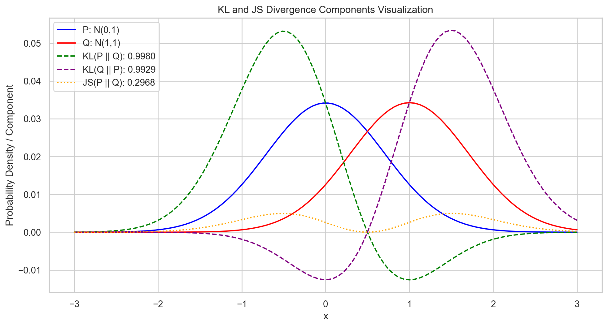
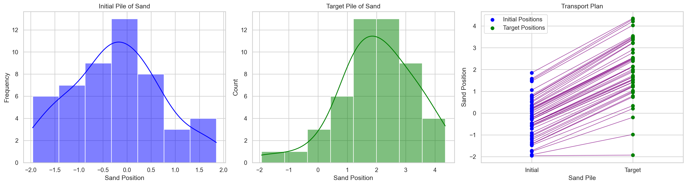
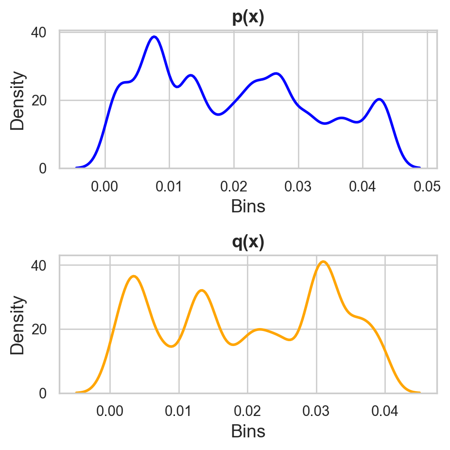
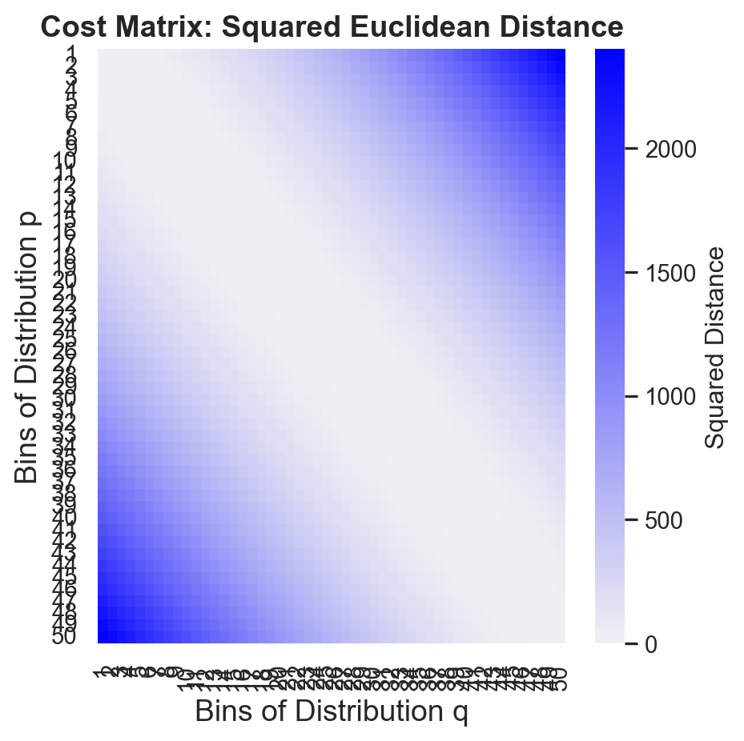
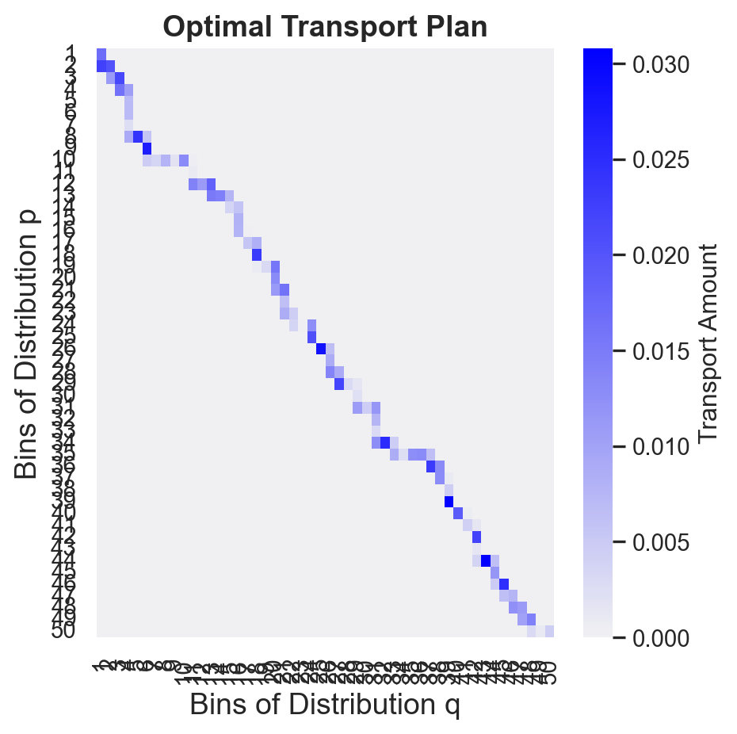

The Quest for understanding Distribution Distance: From Theory to Practice
Understanding the Mathematics (but not too many) of Distribution Comparison
Information Theory
Math
Author
Tancrede Hayer
Published
December 27, 2024
Have you ever wondered how we measure how “far apart” two distributions are in data science? It’s not as simple as it might seem, but don’t worry – we’ll keep the math tame and focus on intuition.
By the end of this reading, you will have a better understanding of optimal transport theory and how it helps us in data science and model monitoring.
1 Why do we care about piles of sand ?
An important topic in machine learning (and math in general) is to find a useful way to measure “distance” between pairs of distributions.
Among their properties, symmetry and the triangle inequality play central roles in ensuring that these measures behave intuitively and are mathematically robust.
Why ?
Symmetry is distance metrics between two distributions P and Q ensures their distance remains unchanged regardless of which distribution is considered first \(d(P, Q) = d(Q, P)\).
This symmetry allows for a fair and consistent comparison, as the direction of measurement doesn’t affect the outcome.
The triangle inequality property guarantees that the distance between any two points (distributions) is always less than or equal to the sum of the distances to a third point. For three distributions P, Q, and R, this is expressed as \(d(P, R) ≤ d(P, Q) + d(Q, R)\).
This property ensures that our distance metrics align with the intuitive notion of “shortest path.”
2 The Kullback-Leibler and Jensen-Shannon divergence
2.1 The Kullback-Leibler divergence
Imagine you’re in a bustling city, and you have two maps, \(P\) and \(Q\), trying to guide you through the streets. Now, we want to know which map is more reliable when navigating from point A to B. Here comes KL divergence, to help us out!
The KL Divergence measures how one probability distribution \(Q\) diverges from another, \(P\) :
Let’s make this concrete with a simple city layout having three key locations: Home (H), Work (W), and Shopping Mall (S).
The true map \(P\) shows these probabilities of successful routes:
\(P(H→W) = 0.5\) (a direct highway route)
\(P(H→S) = 0.3\) (a clear urban route)
\(P(H→M) = 0.2\) (a residential path)
While the approximate map \(Q\) shows:
\(Q(H→W) = 0.4\) (underestimates highway access)
\(Q(H→S) = 0.4\) (overestimates this route)
\(Q(H→M) = 0.2\) (correctly estimates this one)
Let’s calculate this for our city example:
For the Work route: \[P(H→W) * log(P(H→W)/Q(H→W)) = 0.5 * log(0.5/0.4) ≈ 0.048\]
For the Shopping route: \[P(H→S) * log(P(H→S)/Q(H→S)) = 0.3 * log(0.3/0.4) ≈ -0.037\]
For the Mall route: \[P(H→M) * log(P(H→M)/Q(H→M)) = 0.2 * log(0.2/0.2) ≈ 0\]
Total KL divergence = 0.048 -0.037 + 0 = 0.011
This means using map Q instead of P results in about 1.1% inefficiency in navigation. In other words, you’ll spend about 1.1% more time or distance traveling when using the approximate map Q compared to the true map P.
In this cityscape analogy, the KL divergence measures how much extra walking you’d do if you used map \(Q\) instead of the true map \(P\). When following directions from \(Q\), the additional distance traveled is proportional to \(D_{KL}(P \| Q)\). It’s like a penalty for when \(Q\) underestimates or misrepresents the probability of going through certain streets compared to \(P\).
The KL divergence quantifies the inefficiency of assuming that the distribution \(Q\) approximates the true distribution \(P\). When encoding data points sampled from \(P\) using a code optimized for \(Q\), the additional coding length is proportional to \(D_{KL}(P \| Q)\).
Now consider, for example, the log term \(\log \frac{P(x)}{Q(x)}\). If \(Q\) suggests you go down an alley while \(P\) shows it’s a dead end (i.e., \(Q(x)\) approaches zero but \(P(x)\) doesn’t), that’s when our navigator (KL divergence) really starts warning you, “Watch out! You’re about to take a long detour!”
The log term, \(\log \frac{P(x)}{Q(x)}\), acts as a penalty for underestimating probabilities in \(Q\) compared to \(P\).
KL divergence heavily penalizes cases where \(Q(x)\) approaches zero while \(P(x)\) remains non-zero.
Before continuing let’s keep in mind the special properties of KL divergence through this lens:
Non-Negativity: \(D_{KL}(P \| Q) \geq 0\) - Using either map will never lead you astray; at worst, they’ll guide you equally well (when \(P = Q\)).
Zero Minimum: \(D_{KL}(P \| Q) = 0 \iff P = Q\) - The only way our navigator won’t make you walk extra is if both maps are the same.
Asymmetric: \(D_{KL}(P \| Q) \neq D_{KL}(Q \| P)\) - Our navigator isn’t biased ; he’ll give different walking distance estimates depending on which map you’re using as your reference.
2.2 Jensen–Shannon Divergence
Continuing our city analogy but now, instead of blindly following one or the other, you want to find a balanced and reliable way to combine them for your journey from point A to B. Here’s come the Jensen-Shannon (JS) divergence.
The JS Divergence is a symmetrized and smoother version of the KL Divergence, defined as:
\[
D_{JS}(P \| Q) = \frac{1}{2} D_{KL}(P \| M) + \frac{1}{2} D_{KL}(Q \| M), \text{ where } M = \frac{1}{2}(P + Q)
\]
Concreate example
Detailed Calculation of Jensen-Shannon Divergence
Let’s work through a detailed calculation using our city navigation example to better understand how JS divergence works in practice.
Step 1: Calculate M
Given our probability distributions: P = [0.5, 0.3, 0.2] (true map) Q = [0.4, 0.4, 0.2] (approximate map)
The small JS divergence value (0.00295) indicates that our two maps P and Q are fairly similar in their routing suggestions. This makes sense because:
They completely agree on the probability of the residential path (H→M: 0.2)
They only slightly disagree on the highway route (0.5 vs 0.4)
Their difference in the urban route (0.3 vs 0.4) is moderate
This numerical example shows how JS divergence provides a symmetric and bounded measure of the difference between two probability distributions, making it particularly useful for comparing different routing strategies or maps.
The JS divergence finds a middle ground between maps \(P\) and \(Q\) by averaging them into a new map \(M = \frac{1}{2}(P + Q)\). It then measures how different this average route is from each original one, giving equal weight to both.
By combining and averaging the maps, our navigator (JS divergence) ensures a more stable and symmetric measure of their differences. This interpolation also helps when one map suggests going through a street that the other doesn’t – instead of getting stuck, our navigator finds a sensible alternative route.
Unlike KL divergence, the JS divergence measures the similarity of two distributions by incorporating their average, \(M\). By interpolating between \(P\) and \(Q\), JS divergence ensures a bounded and symmetric measure. This interpolation resolves issues of infinite divergence where \(P(x) > 0\) but \(Q(x) = 0\).
And let’s revisit the special properties of JS divergence using this city analogy:
Symmetric: \(D_{JS}(P \| Q) = D_{JS}(Q \| P)\) - Our compromising navigator gives equal importance to both maps and provides a balanced measure of their differences, ensuring you’re not favoring one over the other.
Bounded: \(0 \leq D_{JS}(P \| Q) \leq 1\) - The navigator’s score will always fall within a reasonable range, making it easier for you to gauge how similar or different the two maps are in guiding your journey.
Smooth: Handles zero probabilities gracefully compared to KL Divergence - When one map suggests going down a street that the other doesn’t (or vice versa), our navigator won’t get flustered or lost. She’ll find an alternative route, making sure you still reach your destination with minimal d
2.3 A picture is worth a thousand words
Code
import numpy as npimport seaborn as snsimport matplotlib.pyplot as pltfrom scipy import statsfrom scipy.optimize import linprogdef kl_divergence(p, q): p = np.array(p) q = np.array(q)return np.sum(np.where(p !=0, p * np.log(p / q), 0))def js_divergence(p, q): p = np.array(p) q = np.array(q) m =0.5* (p + q) kl_mq = kl_divergence(m, q) kl_mp = kl_divergence(m, p)return0.5* (kl_mq + kl_mp)# Define two distributionsx = np.linspace(-3, 3, 100)p = np.exp(-x**2) / np.sqrt(2* np.pi) # Normal distribution, mean=0, std=1q = np.exp(-(x -1)**2) / np.sqrt(2* np.pi) # Normal distribution, mean=1, std=1# Normalize distributionsp /= np.sum(p)q /= np.sum(q)# Compute divergences and their componentskl_pq = kl_divergence(p, q)kl_qp = kl_divergence(q, p)js_pq = js_divergence(p, q)m =0.5* (p + q)kl_mq = kl_divergence(m, q)kl_mp = kl_divergence(m, p)# Visualizationsns.set(style="whitegrid")plt.figure(figsize=(12, 6))# Original distributions P and Qplt.plot(x, p, label="P: N(0,1)", color="blue")plt.plot(x, q, label="Q: N(1,1)", color="red")# KL(P || Q) component: P * log(P / Q)kl_pq_component = np.where(p !=0, p * np.log(p / q), 0)plt.plot(x, kl_pq_component, label=f"KL(P || Q): {kl_pq:.4f}", color="green", linestyle="--")# KL(Q || P) component: Q * log(Q / P)kl_qp_component = np.where(q !=0, q * np.log(q / p), 0)plt.plot(x, kl_qp_component, label=f"KL(Q || P): {kl_qp:.4f}", color="purple", linestyle="--")# JS(P || Q) components: 0.5 * (P * log(P / M) + Q * log(Q / M))js_pq_components =0.5* (np.where(p !=0, p * np.log(p / m), 0) + np.where(q !=0, q * np.log(q / m), 0))plt.plot(x, js_pq_components, label=f"JS(P || Q): {js_pq:.4f}", color="orange", linestyle=":")plt.title("KL and JS Divergence Components Visualization")plt.xlabel("x")plt.ylabel("Probability Density / Component")plt.legend()plt.show()

Figure 1: KL and JS Divergence Components Visualization
What is divergence components ?
The divergence components represent the point-wise contributions to the overall divergence measures between distributions P and Q.
The area under each component curve equals the total divergence measure. Locations where components peak indicate regions where the distributions differ most substantially, providing insight into local distribution differences.
The plot visualizes the comparison between Kullback-Leibler (KL) and Jensen-Shannon (JS) divergences for two normal distributions \(PN(0,1)\) and \(QN(1,1)\).
The blue and red curves show the original distributions, while the green and purple dashed lines represent the KL divergence components \(KL(P||Q)\) and \(KL(Q||P)\) respectively, demonstrating KL’s asymmetry.
The orange dotted line shows the JS divergence component, which is symmetric and combines information from both distributions through their midpoint M.
The legend includes numerical values for each divergence measure, with \(KL(P||Q) ≠ KL(Q||P)\), illustrating KL’s asymmetric nature, while JS maintains a single value representing the symmetric difference between the distributions.
3 A Brief Pause
While KL and JS divergences focus on comparing the probabilistic structure of two distributions, they fail to capture spatial or geometric differences between distributions. This is especially important when comparing datasets where the “location” of the mass matters as much as the overall distribution.
Enter the Wasserstein Distance, a metric that builds upon the idea of moving probability mass between distributions. By framing the comparison in terms of transportation costs, Wasserstein Distance offers a more comprehensive perspective. It measures not only the discrepancy in probabilities but also the effort required to align distributions spatially. This makes it particularly valuable in modern machine learning applications like Generative Adversarial Networks (GANs), domain adaptation, and shape analysis.
In the sections that follow, we will delve deeper into the Wasserstein Distance, exploring its mathematical foundation, intuitive interpretations, and practical applications.
To be more clear
While KL and JS divergences can be computed using simple pointwise operations (e.g., division, multiplication, and addition) on the probability density functions (PDFs), followed by integration or summation. In contrast, the Wasserstein Distance requires solving an optimization problem, typically using the Monge-Kantorovich mass transfer theorem or related techniques like the Sinkhorn algorithm (This will be our next story, so be ready). This makes it more computationally involved.
4 The Wasserstein distance
Imagine you’re a data scientist faced with an intriguing challenge: how do you measure the similarity between two different distributions? Perhaps you’re comparing the distribution of customer spending patterns before and after a marketing campaign, or maybe you’re evaluating how well a generative model captures the essence of real data.
Enter the Wasserstein distance – a powerful mathematical tool that approaches this problem with an elegant metaphor: imagine your distributions as piles of earth, and you need to figure out the most efficient way to reshape one pile into the other.
4.1 The Mathematical Journey
4.1.1 The Classical Approach: Monge’s Vision
Gaspard Monge, an 18th-century French mathematician, first formulated this problem of optimal transportation who will later be express in terms of moving earth (hence the nickname “Earth Mover’s Distance” or “Monge-Kantorovich problem”). His formulation is the Wasserstein distance for \(p=1\):
A transport map \(T(x)\) moves mass at point \(x\) under distribution \(P\) to some point under distribution \(Q\).
The cost of moving mass from \(x\) to \(T(x)\) is given by \(\|x - T(x)\|^p\), raised to the power \(p\).
We seek the transport map \(T\) that minimizes this total transport cost, denoted as \(\inf_T \|x - T(x)\|^p\).
Think of this as finding the optimal way to move each grain of sand from one pile (\(P\)) to another (\(Q\)). The function \(T(x)\) tells us where each grain should go, and we want to minimize the total effort of moving all the sand.
But there was a catch – sometimes this direct mapping approach proves impossible (\(T(x)\) does not exist). Imagine trying to transform a single mountain (\(P\)) into two smaller hills (\(Q\)). How do you map one peak to two? This limitation led to a more flexible approach.
Code
# Set up the initial and target distributions of sand pilesnp.random.seed(42)pile_1 = np.random.normal(loc=0, scale=1, size=50) # Smaller sample for claritypile_2 = np.random.normal(loc=2, scale=1.5, size=50) # Target pile# Transport plan: simplest one-to-one matching (sorted values for illustration)pile_1_sorted = np.sort(pile_1)pile_2_sorted = np.sort(pile_2)# Create the multiplotfig, axes = plt.subplots(1, 3, figsize=(18, 5), sharey=False)# Plot initial pilesns.histplot(pile_1, kde=True, color="blue", ax=axes[0])axes[0].set_title("Initial Pile of Sand")axes[0].set_xlabel("Sand Position")axes[0].set_ylabel("Frequency")# Plot target pilesns.histplot(pile_2, kde=True, color="green", ax=axes[1])axes[1].set_title("Target Pile of Sand")axes[1].set_xlabel("Sand Position")# Plot transport plan with aesthetic linesfor i inrange(len(pile_1_sorted)): axes[2].plot([0, 1], [pile_1_sorted[i], pile_2_sorted[i]], color="purple", alpha=0.7, lw=1)axes[2].scatter([0]*len(pile_1_sorted), pile_1_sorted, color="blue", label="Initial Positions", zorder=5)axes[2].scatter([1]*len(pile_2_sorted), pile_2_sorted, color="green", label="Target Positions", zorder=5)axes[2].set_title("Transport Plan")axes[2].set_xticks([0, 1])axes[2].set_xticklabels(["Initial", "Target"])axes[2].set_xlim(-0.5, 1.5)axes[2].set_xlabel("Sand Pile")axes[2].set_ylabel("Sand Position")axes[2].legend()# Adjust layout and displayplt.tight_layout()plt.show()

Figure 2: Visualization of the sandpile transport problem, including initial and target distributions as well as the transport plan.
4.1.2 The Modern Solution: Kantorovich’s Breakthrough
Leonid Kantorovich revolutionized the field by allowing us to split and combine masses. His formulation looks like this:
J(x, y): A joint distribution over (x, y) pairs. Think of J as specifying how much “mass” at x under P is transported to y under Q.
J(P, Q): The set of all possible joint distributions J whose marginals are P and Q.
Marginal Condition :
\(\int J(x, y) \, dy = P(x)\), All mass at x under P is accounted for.
\(\int J(x, y) \, dx = Q(y)\), All mass at y under Q is accounted for.
\(∥x - y∥^p\) : The cost of transporting mass between x and y.
Instead of finding a direct map, we now look for a “transport plan” \(J(x,y)\) that tells us how much mass to move from each point \(x\) to each point \(y\). It’s like having a shipping manifest that details how much sand moves between any two locations.
An interesting point is the fact that the Kantorovich problems can be express a dual formula.
In this dual formulation, instead of finding a transport plan J, we find functions \(\phi(x)\) and \(\psi(y)\) that describe the “potential energy” of moving mass from P to Q. The supremum is taken over all measurable functions \(\psi\) and \(\phi\).
So, instead of finding a transport plan J, we find functions \(\phi(x)\) and \(\psi(y)\) that describe the “potential energy” of moving mass from distribution P to Q. These functions, often referred to as potentials or couplings, quantify the minimal cumulative cost required to transport mass from any point x in the source (P) to a point with zero potential energy in the target (Q), and vice versa. By optimizing over these potentials, we can efficiently compute the minimal cost of transporting all mass from P to Q.
But before seeing what does thies mean let’s look some special case.
4.2 Special Cases and Practical Trick
4.2.1 The One-Dimensional Miracle
In one dimension, something magical happens. The Wasserstein distance becomes surprisingly simple to compute:
Become for \(p=2\) the simple : This is like comparing two distributions by aligning their quantiles and measuring the average distance between corresponding points. It’s particularly useful when working with simple univariate distributions.
Distance between the means:\(\|\mu_1 - \mu_2\|_2\) Measures the Euclidean distance between the means of two distributions.
Trace:\(\text{Tr}(\Sigma_1 - \Sigma_2)^2\) Measures differences in the covariance structures, where \(\Sigma_1\) and \(\Sigma_2\) are the covariance matrices of the respective distributions.
This formula neatly separates the difference between means from the difference in spread and shape.
4.3 Making It Practical: The Sinkhorn Algorithm
In real-world applications, when \(P\) and \(Q\) are discrete distribution, computing the exact Wasserstein distance can be computationally intensive. Enter the Sinkhorn algorithm, which adds a touch of entropy regularization:
This regularization makes the computation much more tractable while still preserving the essential properties of the Wasserstein distance.
Mistral Nemo Explain 👨🏻🏫
Entropy Regularization: The key idea behind entropy regularization is to add a term proportional to the negative entropy (or KL-divergence) of the transport plan J to the original optimization problem. This has two main effects:
It encourages J to be more “uniform” or “entropic,” making it easier to optimize.
It introduces a bias towards transports that are close to the uniform distribution, making the problem smoother and better suited for numerical methods like the Sinkhorn algorithm.
Sinkhorn Iterations: The Sinkhorn algorithm is an iterative method that finds an approximate solution to the entropy-regularized Wasserstein distance minimization problem. It works by alternating between updating two potential functions, \(\phi(x)\) (for source distribution P) and \(\psi(y)\) (for target distribution Q), while keeping track of a transport plan K that is row-wise and column-wise stochastic (i.e., each row and column sums to 1). Here’s how the algorithm progresses:
Initialize potential functions \(\phi^{(0)}(x) = \log P(x)\) and \(\psi^{(0)}(y) = \log Q(y)\), or some initial guess.
Iterate the following steps until convergence:
Row Update: Compute a new transport plan K by normalizing the row-wise product of potentials: \[
K_{ij} \propto P_i Q_j e^{-\|x_i - y_j\|_p / \lambda} e^{\phi^{(t)}(x_i) + \psi^{(t)}(y_j)}
\] where \(P_i\) and \(Q_j\) are the discrete probabilities for sources and targets, respectively.
Column Update: Normalize the columns of K to obtain an updated transport plan K’, and then compute new potentials: \[
\phi^{(t+1)}(x_i) = \log \left( \sum_j K'_{ij} e^{- \|x_i - y_j\|_p / \lambda} e^{\psi^{(t)}(y_j)} \right)
\]\[
\psi^{(t+1)}(y_j) = \phi^{(t+1)}(x_0) + \frac{\|x_0 - y_j\|_p}{\lambda} - \log Q_j
\] where \(x_0\) is an arbitrary point (often chosen as the mean or median of P).
Convergence: The Sinkhorn algorithm is guaranteed to converge for any initial potentials, and the limit transport plan K satisfies a fixed-point equation that corresponds to the solution of the entropy-regularized Wasserstein distance minimization problem. Moreover, as \(\lambda \to 0\), the approximate solution converges to the exact solution of the original (unregularized) problem.
Advantages: The main advantages of using the Sinkhorn algorithm with entropy regularization are:
It provides an efficient and easy-to-implement method for computing approximations of the Wasserstein distance between discrete distributions.
It can handle large-scale problems, as it only requires solving a sequence of linear systems at each iteration.
It is robust to initialization and converges quickly in practice.
To resume: Given two distributions P and Q, the core idea of the Wasserstein distance is to find the “least-cost” way to transport mass from P to Q. This problem can be formulated either as a Monge map (direct transportation) or a Kantorovich potential (joint distribution).
The output is a scalar distance \(\mathcal{W}_p(\textbf{P}, \textbf{Q})\) that quantifies the minimal cumulative cost of transporting all mass from P to Q, where costs are measured using the \(L_p\) norm. Optionally, an explicit transport plan or map can also be provided.
This formulation enables us to compare and analyze distributions based on their relative transportation costs, making it a powerful tool in various applications such as machine learning, shape analysis, and optimal transport theory. In the next part, we will explore practical algorithms for computing the Wasserstein distance between discrete distributions.
5 Problem Solving : How to find the optimal path for 1D distribution ?
Now let’s focusing on explaining the optimal transport method for 1D distributions and its relation to Wasserstein distance. Yes, it is time for an an easy practical example.
5.1 Optimal Transport for 1D Distributions: Finding the Best Path
In this section, we explore how to compute the “optimal transport plan” between two 1D distributions \(p(x)\) and \(q(x)\).
As already explain, the concept of optimal transport lies at the heart of the Wasserstein distance, which measures the “effort” required to morph one distribution into another.
This is particularly useful for comparing probability distributions, whether as a loss function in machine learning or for creating monitoring metrics.
Let’s explain what will happen in the code.
5.2 First Stage: The Cost Matrix
To determine the optimal transport plan, we first define a cost matrix\(C\). Each entry \(C[i][j]\) represents the cost of moving “mass” from bin \(i\) of \(p(x)\) to bin \(j\) of \(q(x)\). For this example, we use the squared Euclidean distance between bins:
\[
C[i][j] = (i - j)^2
\]
This choice ensures that movements over longer distances incur a higher cost, reflecting their physical or conceptual separation.
5.3 Second Stage : Linear Programming Approach for finding the best Transport Plan.
The optimal transport problem can be formulated as a linear programming (LP) problem. Our goal is to find a transport plan \(T\), where \(T[i][j]\) specifies the amount of mass to move from bin \(i\) of \(p(x)\) to bin \(j\) of \(q(x)\), such that:
The row sums of \(T\) equal \(p\), ensuring all mass in \(p(x)\) is transported: \[
\sum_{j} T[i][j] = p[i] \quad \forall i
\]
The column sums of \(T\) equal \(q\), ensuring all mass in \(q(x)\) is received: \[
\sum_{i} T[i][j] = q[j] \quad \forall j
\]
The total cost is minimized: \[
\text{Minimize } \sum_{i, j} T[i][j] \cdot C[i][j]
\]
We use the scipy.optimize.linprog function to solve this LP problem. The result is a transport plan \(T\) that minimizes the total cost while satisfying the marginal constraints.
Personal introspection
As I write this, I’m thinking back to some of my courses on path-finding algorithms like A* and Dijkstra. Maybe there’s a link?
5.4 Third : Code Walkthrough
Let’s resume what we want to observe:
The Density Functions
The kernel density estimates (KDEs) of \(p(x)\) and \(q(x)\) give an intuitive view of the distributions.
The Cost Matrix
The heatmap of the cost matrix \(C\) illustrates the squared distances between bins. Higher values indicate a higher cost of transportation.
The Optimal Transport Plan
By visualized \(T\) as a heatmap we will shows the amounts of mass transported from each bin of \(p(x)\) to \(q(x)\).
Below are the results of applying the above concepts:
Code
import numpy as npimport seaborn as snsimport matplotlib.pyplot as pltfrom scipy.optimize import linprognp.random.seed(42)nb_b =50p = np.random.rand(nb_b)p = p / p.sum() q = np.random.rand(nb_b)q = q / q.sum() # Create the cost matrix C based on squared Euclidean distancebins =len(p) C = np.square(np.subtract.outer(np.arange(bins), np.arange(bins))) # Squared distance# Flatten distributions and cost matrix for linear programmingc = C.flatten() # Cost vector (flattened cost matrix)A_eq = np.zeros((2* bins, bins * bins)) # Equality constraints matrixb_eq = np.concatenate([p, q]) # Marginal sums for p and q# Build the A_eq matrix to enforce the marginals for p and qfor i inrange(bins): A_eq[i, i * bins: (i +1) * bins] =1# For row sums to p[i] A_eq[i + bins, i::bins] =1# For column sums to q[i]# Solve the linear programming problemresult = linprog(c, A_eq=A_eq, b_eq=b_eq, method='highs')# Retrieve the transport plan matrix T from the solutionT = result.x.reshape((bins, bins))def plot_density(p, q): _, (ax1, ax2) = plt.subplots(2, 1, figsize=(5, 5)) sns.kdeplot(p, color='blue', ax=ax1, linewidth=2, bw_adjust=0.3) ax1.set_title('p(x)', fontsize=14, fontweight='bold') ax1.set_xlabel('Bins', fontsize=14) ax1.set_ylabel('Density', fontsize=14) sns.kdeplot(q, color='orange', ax=ax2, linewidth=2, bw_adjust=0.3) ax2.set_title('q(x)', fontsize=14, fontweight='bold') ax2.set_xlabel('Bins', fontsize=14) ax2.set_ylabel('Density', fontsize=14) plt.tight_layout() plt.show()def plot_cost_matrix(C, bins): plt.figure(figsize=(5,5)) sns.heatmap(C, annot=False, fmt='.1f', cmap=sns.color_palette("light:blue", as_cmap=True), cbar=True, xticklabels=[f'{i+1}'for i inrange(bins)], yticklabels=[f'{i+1}'for i inrange(bins)], cbar_kws={'label': 'Squared Distance'}) plt.title('Cost Matrix: Squared Euclidean Distance', fontsize=14, fontweight='bold') plt.xlabel('Bins of Distribution q', fontsize=14) plt.ylabel('Bins of Distribution p', fontsize=14) plt.tight_layout() plt.show()def plot_transport_plan(T, bins): plt.figure(figsize=(5,5)) sns.heatmap(T, annot=False, fmt='.2f', cmap=sns.color_palette("light:blue", as_cmap=True), cbar=True, xticklabels=[f'{i+1}'for i inrange(bins)], yticklabels=[f'{i+1}'for i inrange(bins)], cbar_kws={'label': 'Transport Amount'}) plt.title("Optimal Transport Plan", fontsize=14, fontweight='bold') plt.xlabel("Bins of Distribution q", fontsize=14) plt.ylabel("Bins of Distribution p", fontsize=14) plt.tight_layout() plt.show()
Code
plot_density(p, q)plot_cost_matrix(C, bins)

Figure 4: Density plots of the two distributions p and q

Figure 5: Cost matrix based on squared Euclidean distance between bins of distributions p and q.
Code
plot_density(p, q)plot_transport_plan(T, bins)
Figure 6: Density plots of the two distributions p and q

Figure 7: Optimal transport plan showing the transport amounts between bins of p and q.
The visualization of the optimal transport plan clearly shows how \(p(x)\) is “redistributed” to align with \(q(x)\).
Each nonzero element of T corresponds to a connection between \(p[i]\) and \(q[j]\), with the intensity reflecting the amount of mass transported.
But what’s the connection with the Wasserstein Distance ?
Her, the optimal transport plan \(T\) allows us to compute the Wasserstein distance as the square root of the total transport cost:
This metric provides a robust way to compare distributions, considering both the location and “effort” to match their mass. It is particularly advantageous over other metrics like Kullback-Leibler divergence for distributions with non-overlapping supports.
Of course, it is a simple and non optimal exemple, and algorythm like Sinkhorn algorithm will work better.
6 This is the end
Understanding distances between distributions is a fundamental challenge in data science. By framing the problem in terms of optimal transport – moving piles of sand from one distribution to another – it provides an intuitive and mathematically robust way to compare distributions.
As machine learning continues to evolve, tools like the Wasserstein distance become increasingly important. Whether you’re evaluating GANs, WVAE, performing domain adaptation, or monitoring model drift, understanding how to measure and interpret distances between distributions is crucial. While the mathematics may seem daunting at first, the underlying intuition of optimal transport – finding the most efficient way to move probability mass – provides a concrete framework for thinking about these abstract concepts.
Keep in mind that while we’ve focused on some specific implementations and special cases, there’s much more to explore. The field of optimal transport continues to develop, with new algorithms and applications emerging regularly.
Remember: Sometimes the best way to understand how things are different is to figure out what it takes to make them the same – and that’s exactly what the Wasserstein distance helps us quantify
“From GAN to WGAN” by Lilian Weng: This comprehensive post delves into Generative Adversarial Networks (GANs) and introduces the concept of Wasserstein GANs (WGANs).